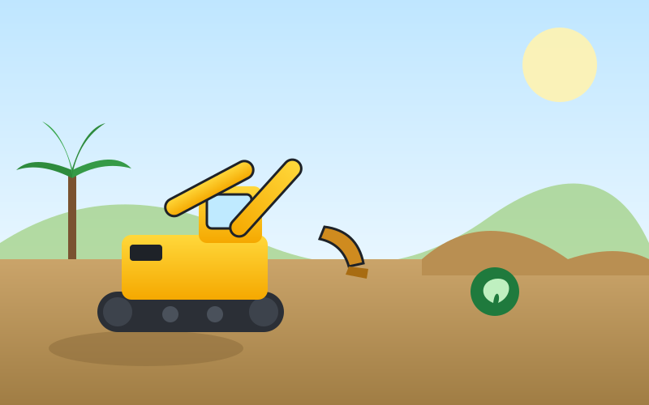
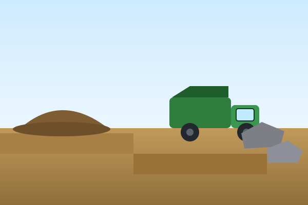
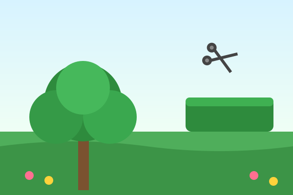

🚜
Terrassement
Terrassement de terrain, plateforme, fondation de maison, fouilles, nivellement et préparation de sol en Guadeloupe.
Terrassement & Travaux de pelle en Guadeloupe
Terrassement, nettoyage de terrain, mur en enrochement, évacuation, aménagement : tout service qui demande une pelle, quel qu'il soit. Nous possédons tous types de pelles et de camions pour réaliser vos chantiers partout en Guadeloupe.

ECO VERT GUADELOUPE propose énormément de services. Dès qu'un chantier demande une pelle ou un camion, nous intervenons. Voici nos principales prestations en Guadeloupe :
Terrassement de terrain, plateforme, fondation de maison, fouilles, nivellement et préparation de sol en Guadeloupe.
Nettoyage de terrain, débroussaillage, dessouchage, défrichage et remise en état de parcelles en friche.
Mur en enrochement, soutènement, stabilisation de talus et aménagement de pente avec gros blocs.
Évacuation de gravats, terre, déchets verts et encombrants avec nos camions bennes.
Aménagement de cour, accès, parking, allée, drainage et viabilisation de terrain.
Tout service qui demande une pelle, quel qu'il soit : mini-pelle, pelle sur chenilles, démolition légère, tranchées.

Quelques exemples de chantiers réalisés avec nos pelles mécaniques.

Espace vert · Jardinier · Paysagiste · Élagage
Au-delà du terrassement, ECO VERT GUADELOUPE entretient et embellit vos extérieurs. Nous sommes aussi votre jardinier paysagiste en Guadeloupe :
Création et entretien d'espace vert, tonte de pelouse, débroussaillage et nettoyage.
Service de jardinier : plantation, taille de haie, entretien de jardin toute l'année.
Aménagement paysager, création de jardin, massifs, gazon et terrasses végétalisées.
Élagage d'arbres, taille, abattage et évacuation des déchets verts.
Toutes les réponses sur le terrassement, la pelle mécanique, le nettoyage de terrain, l'enrochement, l'évacuation, l'aménagement, l'espace vert et l'élagage en Guadeloupe.
ECO VERT GUADELOUPE est une entreprise de terrassement en Guadeloupe qui réalise tout type de chantier : terrassement, nettoyage de terrain, mur en enrochement, évacuation et aménagement. Nous possédons tous types de pelles et de camions. Devis gratuit au 0690 98 85 38.
Oui. ECO VERT GUADELOUPE réalise le nettoyage de terrain, le débroussaillage, le défrichage, le dessouchage et l'évacuation des déchets sur toute la Guadeloupe, avec une pelle adaptée à votre terrain.
Le prix d'un terrassement en Guadeloupe dépend de la surface, de l'accès au terrain, de la nature du sol et du volume à évacuer. ECO VERT GUADELOUPE établit un devis gratuit et personnalisé pour chaque chantier de terrassement.
Oui, nous réalisons des murs en enrochement, des murs de soutènement et la stabilisation de talus en Guadeloupe. L'enrochement est idéal pour retenir la terre, sécuriser une pente et aménager un terrain.
Oui. Grâce à nos camions bennes, ECO VERT GUADELOUPE assure l'évacuation de gravats, de terre, de roches et de déchets verts après tous travaux de terrassement ou de nettoyage de terrain en Guadeloupe.
Nous possédons tous types de pelles : mini-pelle pour les accès étroits et les jardins, pelle sur chenilles pour le gros terrassement, ainsi que des camions de différentes tailles. Tout service qui demande une pelle, quel qu'il soit, nous le faisons en Guadeloupe.
Oui, ECO VERT GUADELOUPE intervient sur toute la Guadeloupe : Basse-Terre, Grande-Terre et les communes alentour, pour le terrassement, l'aménagement et l'espace vert.
Oui. Nous préparons la plateforme, réalisons les fouilles de fondation, le nivellement et la viabilisation de votre terrain avant construction en Guadeloupe.
Oui. ECO VERT GUADELOUPE est aussi jardinier paysagiste en Guadeloupe : entretien d'espace vert, création de jardin, taille de haie, gazon et aménagement paysager complet.
Oui, nous réalisons l'élagage, la taille et l'abattage d'arbres, ainsi que l'évacuation des déchets verts partout en Guadeloupe.
Oui, ECO VERT GUADELOUPE met à disposition ses pelles et camions avec chauffeur expérimenté pour vos chantiers de terrassement et d'aménagement en Guadeloupe.
Contactez ECO VERT GUADELOUPE par téléphone au 0690 98 85 38, par WhatsApp ou par e-mail à ecovertguadeloupe@gmail.com. Nous vous répondons rapidement avec un devis gratuit et sans engagement.
Un projet de terrassement, de nettoyage de terrain, d'enrochement, d'aménagement ou d'espace vert en Guadeloupe ? Demandez votre devis gratuit dès maintenant.